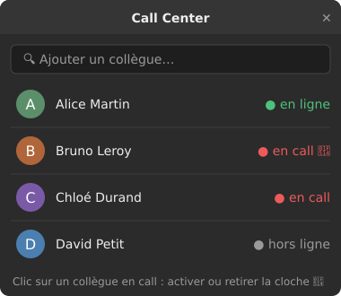
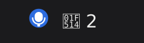
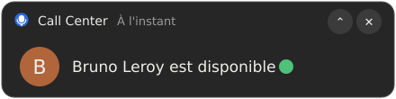

[ 01 ]
Installation
Une seule commande, sans sudo.
curl -fsSL https://raw.githubusercontent.com/loicjazon/call-center/main/install.sh | sh- Aucune permission
sudorequise - Installation dans
~/.local/bin - Lancement automatique à chaque ouverture de session
[ 02 ]
Aperçu
Une liste de collègues favoris, un statut à jour quand vous l'ouvrez, et des cloches pour être prévenu.



[ 03 ]
Comment ça marche
Lecture seule : l'application ne publie rien dans Slack.
- À l'ouverture de la fenêtre, elle lit auprès de Slack la présence et l'état de huddle de vos favoris. Pendant la lecture, le statut s'affiche « inconnu » plutôt qu'une valeur périmée.
- Sur un collègue en call, un clic arme la cloche 🔔. Les collègues avec une cloche sont revérifiés chaque minute.
- Quand il sort du huddle, vous recevez une notification et la cloche se désarme.
[ 04 ]
Prérequis
Un bureau Ubuntu et un jeton Slack en lecture seule.
Système
- Ubuntu 22.04 ou plus récent, avec un bureau graphique (GNOME testé).
- Extension « AppIndicator », activée par défaut sur Ubuntu.
libayatana-appindicator3-1pour l'icône,libnotify-binpour les notifications.
Slack
- Une application Slack à vous, avec le droit
users:read(User Token Scopes). - Le jeton
xoxp-…dans~/.config/call-center/token(chmod 600). - Il reste sur votre machine, et rien n'est envoyé ailleurs (les avatars sont téléchargés sans le jeton).
Calls détectés
- Le « call » est un huddle Slack, y compris un appel entre deux personnes en message privé.
- Un appel Zoom, Teams ou Meet n'est visible que si l'outil met lui-même le statut Slack à jour.
[ 05 ]
Liens utiles
Tout pour bien démarrer.